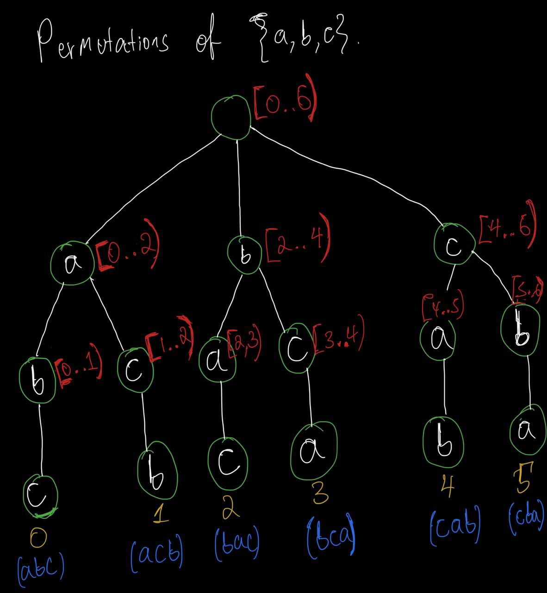
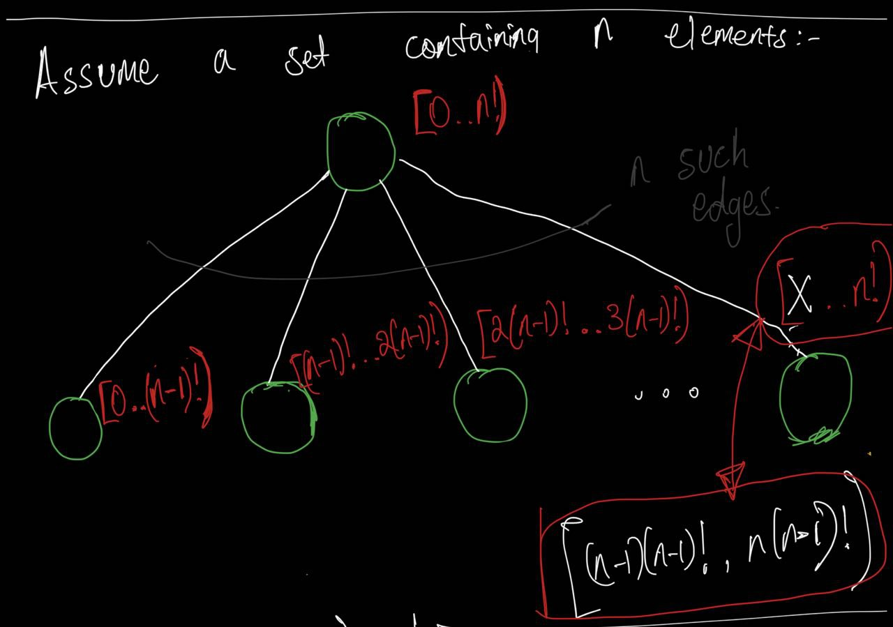
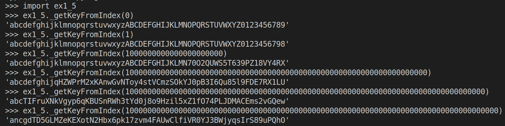
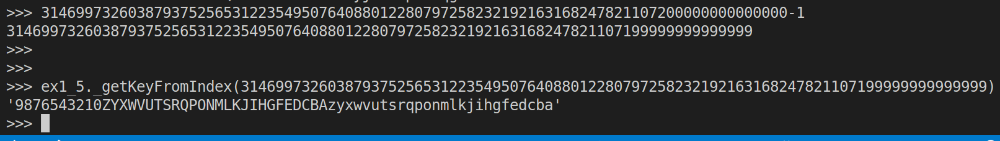
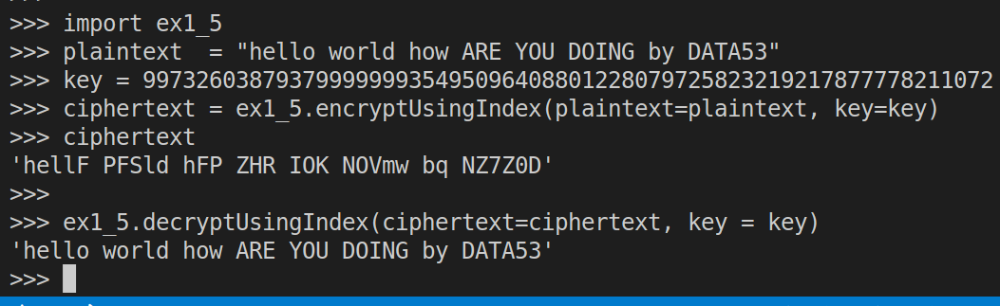

1.5 Identifying the dictionary
Exercise 1.5 Identifying the dictionary
Modify your cryptogram program so that you can identify and pick the jumbled character substitution map with a number. That is, each mapping has a unique number that identifies it: picking substitution \(n\) should create the same substitution mapping every time. This exercise is a little tougher than the others. Do your best!
Let’s simplify the problem and consider the set \(\{a, b, c\}\). Since \(3! = 6\) we know that it has \(6\) permutations. So, what we want is to assign this \(6\) permutations unique numbers starting from \(0\) upto \(5\). The following tree might help us do just that:

The intervals written in red, next to the nodes, in the above picture tell us which permutations are under them. Consider the node that has the interval [2..4). The half open interval represents a set: \([2..4) = \{2, 3\}\). This means that the permutations that have ID \(2 \: \text{and} \: 3\) are below it.
| permutations of \(\{a, b, c\}\) | Number that identifies it |
|---|---|
| \(a, b, c\) | 0 |
| \(a, c, b\) | 1 |
| \(b, a, c\) | 2 |
| \(b, c, a\) | 3 |
| \(c, a, b\) | 4 |
| \(c, b, a\) | 5 |
Okay, let’s generalize a bit:

Given an integer \(z\) satisfying \(0 \leq z < n!\) , do you think we can traverse this tree from the root node down to leaf node and then return the permutation that corresponds to \(z\)?
That is exactly what the function _getKeyFromIndex() does in the following code.
# ex1_5.py
import string
from math import factorial as f
import ex1_3 # look at exercise 1.3
alphabet = string.ascii_letters + string.digits
def _getKeyFromIndex(z: int) -> str:
n = len(alphabet)
assert(z >= 0 and z < f(n))
result = []
_alphabet = list(alphabet)
while n > 0:
q = int(z // f(n-1))
result.append(_alphabet.pop(q))
z -= q * f(n-1)
n = len(_alphabet)
return ''.join(result)
def getKeyFromIndex(z: int) -> dict[str, str]:
primitive_key = _getKeyFromIndex(z = z)
return dict(zip(alphabet, primitive_key))
def encryptUsingIndex(plaintext: str, key: int) -> str:
'''
constraints
-----------
key >= 0 and
key < 31469973260387937525653122354950764088012280797258232192163168247821107200000000000000
'''
actual_key = getKeyFromIndex(z = key)
return ex1_3.encrypt(plaintext=plaintext, key=actual_key)
def decryptUsingIndex(ciphertext: str, key: int) -> str:
'''
constraints
-----------
key >= 0 and
key < 31469973260387937525653122354950764088012280797258232192163168247821107200000000000000
'''
actual_key = getKeyFromIndex(z = key)
return ex1_3.decrypt(ciphertext=ciphertext, key=actual_key)Note that when we pass the smallest key (i.e. zero) to the function _getKeyFromIndex, we get alphabet as is:

Note that when we pass the biggest key to the function _getKeyFromIndex, we get alphabet in reverse:

encryptUsingIndex() and decryptUsingIndex() are straight forward except that you need to pass in an int as a key instead of a dict.
